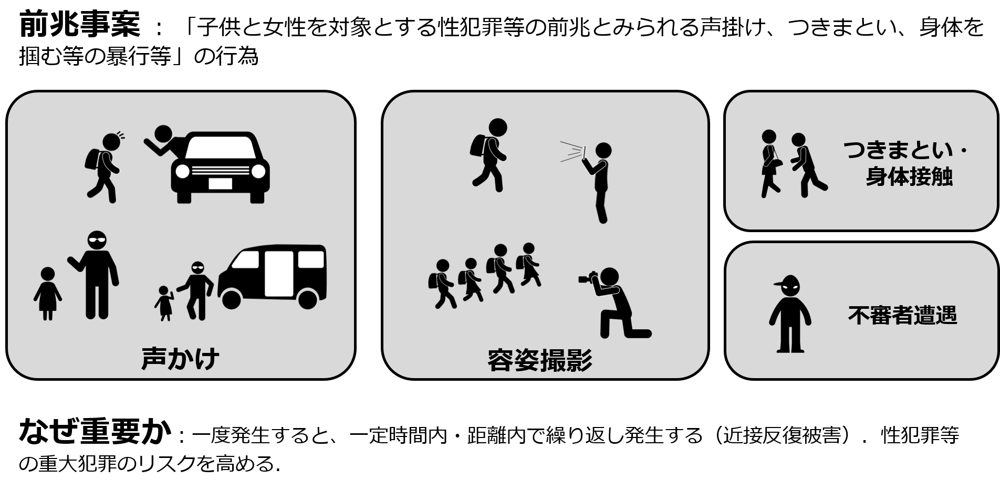
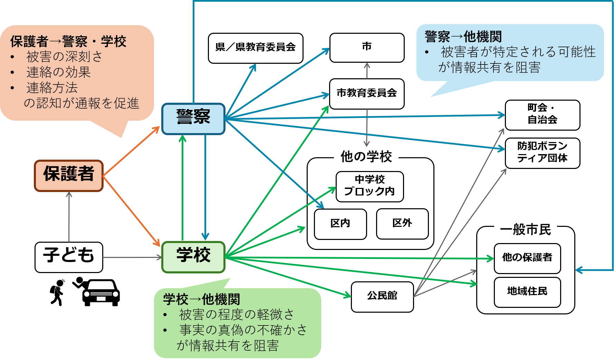

子どもの前兆事案の情報を防犯まちづくりに効果的に活用するための工夫
前兆事案の被害情報を正確に知る
子どもが地域で安全に屋外活動できる環境をつくるには、いつ、どこで犯罪被害の危険が生じているのかを、関係主体が知り、共有する必要があります。その手がかりになるのが、声かけやつきまといといった「前兆事案」の情報です。しかし、前兆事案の被害情報は、被害に遭った子どもから地域に届くまでのあいだで、途切れてしまうことが多くあります。そのため、保護者、学校、警察が知っている前兆事案の情報は実は断片的なものになっていることも多くあります。ここでは、子どもの前兆事案の被害情報は、どこで、なぜ途切れるのかを示し、関係主体による情報共有に向けた工夫を考えます。
あなたが知っている「子どもの被害」は正しい？
子どもの犯罪被害における「前兆事案」とは、声かけ、容姿撮影、つきまとい、不審者遭遇といった、子どもが遭遇する犯罪以前の危険な出来事を指します（図1）。前兆事案個々の被害は軽微なものであることも多いですが、一定の時間内・距離内で繰り返し発生する性質があり、さらに性犯罪など重大な犯罪の予兆にもなりうることが分かっています。国の「登下校防犯プラン」でも、「不審者情報の共有と迅速な対応」が柱の一つとされています。

声かけ、容姿撮影、つきまとい、不審者遭遇などが前兆事案にあたり、繰り返し発生し、将来の重大事案のリスクを高めるという意味で重要とされています。
しかし、過去の調査では、自身の子どもが遭遇した前兆事案を警察・学校に連絡した保護者は、それぞれ17％、31％にとどまり、誰にも連絡しなかった保護者が26％いました。単独の被害の程度が軽微であったがために情報の重要性が過小評価され、共有されないまま終わっているのが実情です。
保護者・学校・警察の三者に尋ねる
前兆事案の被害情報がどのように伝播するのかを調べるため、福岡市において保護者・学校・警察への調査を行いました。保護者に対しては、小中学生を第一子に持つ518人を対象に、三種類の架空の前兆事案の場面を提示して、学校や警察に連絡するかを尋ねました。学校に対しては、福岡市立の全小中学校へのアンケートにより前兆事案の扱いについて尋ね、172校から回答を得ました。警察に対しては、福岡県警本部と福岡市内7警察署へのヒアリング調査を実施しました。
情報の連鎖はどこで途切れるのか（図2）
自身の子どもが前兆事案被害に遭遇した保護者から学校・警察に連絡をする段階（通報段階）では、「被害の深刻さ」、「連絡の効果」、「連絡の窓口を知っているか」という３つの認知が、連絡するか否かを分けていました。特に、連絡しても意味がないと思われている場合に、保護者からの通報意図は下がる傾向がありました。連絡先としては、学校よりも警察の方が障壁が高く、身体接触がある場合などの深刻な事案でも、警察には連絡しにくいという傾向が見られました。
学校は、過去3年間に7割程度の学校が実際に前兆事案を認知していましたが、他機関と共有する度合いは学校ごとの判断に委ねられていました。学校が前兆事案の被害情報を他機関と共有しない主な理由は、「被害の程度が軽微であるため」と「事実の真偽が不確かであるため」でした。
警察も、前兆事案の被害情報の地域との共有方針は、署ごとにばらつきがみられました。警察によるメールニュースで住民に配信された前兆事案の割合は、署によって13％から84％まで開きがありました。前兆事案をメールニュースで配信しない理由として署に共通していたのは、「被害者が特定される可能性への懸念」でした。つまり、仮に同じ程度・頻度での前兆事案が起きていたとしても、地域によって住民に届く情報は違うという状態が生じていました。

子どもから保護者、学校や警察を経て地域へと情報が流れますが、各段階に情報を止める要因があります。
実践への示唆：懸念を払しょくしつつ、前兆事案の被害情報を共有する
保護者から学校や警察への通報を促進するには、三つの認知に働きかけることが重要です。前兆事案が繰り返し発生し重大な被害につながりうることを伝えることで被害の程度を過小評価しないようにし、寄せられた情報が地域での次の前兆被害を防ぐことにつながることを知らせることで連絡の効果が感じられるようにし、アプリなど手軽に連絡できる手段と窓口を設定することが、保護者からの通報率を高めることにつながります。
学校や警察が情報を他機関と共有するためには、前兆事案の被害の程度や真偽の判断を現場に委ねない（情報共有に迷いを生じさせない）ことが重要です。あらかじめ記入項目を決めた標準化された様式で前兆事案の被害情報を記録すれば、現場の個別判断を経ずに情報が蓄積されます。これは、学校の先生の負担を減らすことにもつながります。
警察が懸念する被害者特定の可能性については、共有する情報の内容を絞ることで対応できます。地域の防犯活動に必要なのは、被害者が誰かではなく、その被害がいつ、どこで起きたかです。前兆事案の種別と、発生時間・発生場所に絞った共有であれば、懸念の多くは解消できます。こうして集まった情報は、地域で行われる防犯診断や見守りの目の配置を考える根拠にもなります。